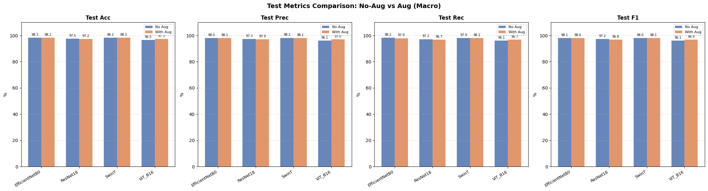
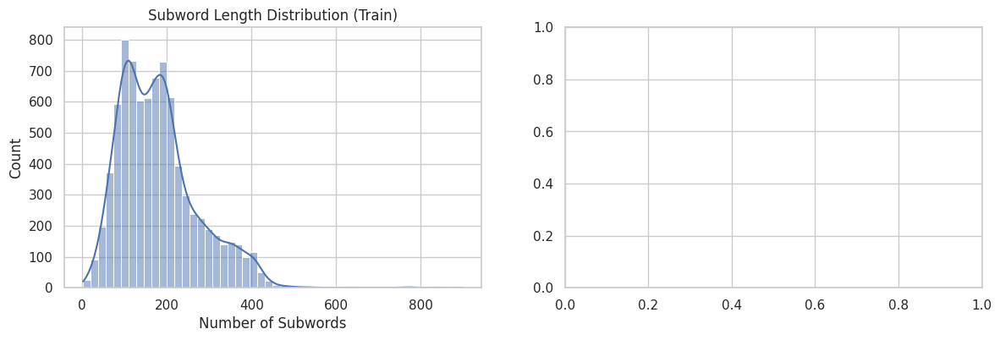

BTL 1: Phân loại Đa phương thức (Multimodal)
Nghiên cứu mô hình kết hợp Ảnh và Văn bản thông qua Zero-shot và Few-shot Learning.
1. Tổng quan Đa phương thức (VQA & CLIP)
Thay vì huấn luyện mô hình dự đoán nhãn tĩnh, nhóm tiến hành trích xuất Feature Embeddings từ cả nhánh Text (Text Encoder) và nhánh Image (Image Encoder), ánh xạ chúng vào cùng một không gian hình học. Điển hình sử dụng kiến trúc CLIP của OpenAI.
2. Zero-shot vs Few-shot Classification
Zero-shot: Sử dụng Text prompt dưới dạng "A photo of {class_name}" để map với ảnh mà không cần bất kỳ mẫu train nào. Zero-shot phát huy sức mạnh đáng gờm tại đa dataset.
Few-shot: Bằng cách kết hợp thêm bộ phận Learnable Prompt (CoOp / CLIP-Adapter) sử dụng với 1-5 shots mỗi lớp, độ nhạy của độ chính xác có thể tăng thêm từ $5\% \rightarrow 10\%$.

